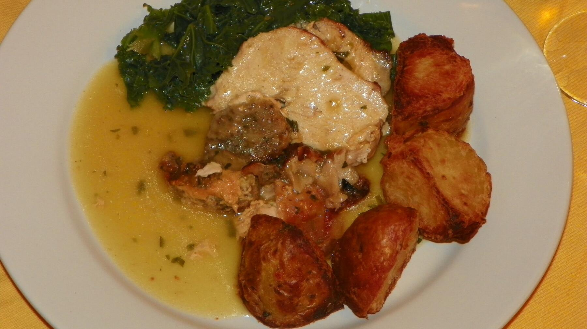

Zurück zur Übersicht
Putenbrust mit Pflaumen-Sriracha-Soße
Putenbrust aus dem Ofen mit einer süß-scharfen Soße aus Pflaumenkonfitüre, Sriracha und Sojasoße, dazu Ofenkartoffeln mit Hartkäse und ein roher Rote-Bete-Salat.
- Zeit
- 40 Min.
- Schwierigkeit
- leicht
- Kategorie
- Ofen
- Ernährung
- fleisch
Zutaten
Portionen
- 250 gPutenbrust
- 400 gfestkochende Kartoffeln
- 20 gHartkäse italienischer Art, gerieben
- 2 ELÖl
Für die Soße
- 1 ZeheKnoblauch
- 80 gPflaumenkonfitüre
- 2 mlSriracha-Soße (nach Geschmack mehr)
- 10 mlSojasoße
- 50 mlWasser
Für den Salat
- 150 gfrische Rote Bete
- 50 mlButtermilch-Zitronen-Dressing
- 50 gBlattsalatmischung
- Salz und Pfeffer
Zubereitung
- Den Backofen auf 220 °C Ober-/Unterhitze (200 °C Umluft) vorheizen. Die Kartoffeln vierteln und auf ein mit Backpapier belegtes Backblech geben, dabei Platz für eine Auflaufform lassen. Mit dem Hartkäse und 1 EL Öl vermengen und mit Salz und Pfeffer würzen. Im Ofen 25–35 Minuten backen, bis sie weich und goldbraun sind.
- Die Putenbrust in eine Auflaufform geben und mit 1 EL Öl, einer Prise Salz und Pfeffer marinieren. 20–22 Minuten mit in den Ofen geben, bis das Fleisch innen nicht mehr rosa ist.
- Die Knoblauchzehe fein hacken. In einer kleinen Schüssel Knoblauch, Sriracha, Sojasoße, Pflaumenkonfitüre und Wasser verrühren. In den letzten 10 Minuten der Backzeit die Putenbrust mit der Soße übergießen und fertig backen.
- Für den Salat die Rote Bete grob in eine große Schüssel raspeln. Das Dressing dazugeben und gut verrühren.
- Den Salat zur Roten Bete geben, vermengen und mit Salz und Pfeffer abschmecken.
- Kartoffeln, Rote-Bete-Salat und Putenbrust mit Soße nebeneinander auf Tellern anrichten.
Tipp: Rote Bete färbt stark ab, beim Raspeln am besten Handschuhe tragen. Für 4 Personen die Kartoffeln auf 2 Blechen backen.
Dressing: Wer kein fertiges Buttermilch-Zitronen-Dressing hat, verrührt Buttermilch mit einem Spritzer Zitronensaft, Salz, Pfeffer und einer Prise Zucker.